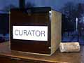

|
Over 1700 artists featured in once-in-a-decade exhibition at The Minneapolis Institute of Arts
Minneapolis, MN - Works by over 1700 visual artists are on view at the Institute in The Foot in the
Door Show 2000. This extraordinary exhibition, presented by the Minnesota Artists Exhibition Program,
invited all artists of Minnesota to participate in an exhibition at the museum provided they restricted their work to one cubic foot of gallery space.
The curator for the Foot in the
Door Show 2000 was a square wooden box measuring no more than 12" on each side. To be accepted into the show, each work of art needed
to fit into this box. A giant grid ordered the installation of the art, giving exactly the same amount of real estate to
each artist. The works were hung in the order in which they were received.
The Foot in the Door Show celebrates democracy and acknowledges the visual artist community as an
essential force in this region's culture. The giant collage of art embodied in the show testifies to the incredible
diversity of vision that has evolved in Minnesota over the past three decades.

to next page